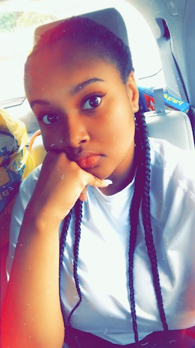
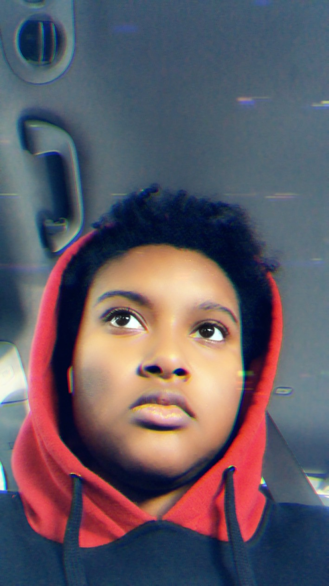
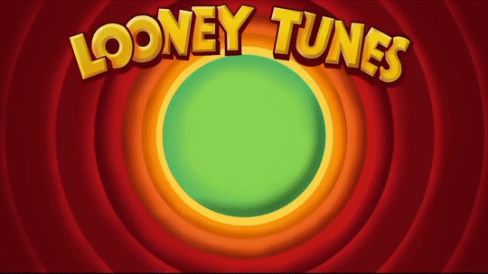

How to Contact Me!
How to Contact Me!
How to Contact Me!
How to Contact Me!
Welcome to my Portfolio! This is the place where all of my drawings hide. I essentially started drawing adn when i started as a kid you can never get me to really stop! 
I'm an animation and motion graphics major and essentially I've been drawing since I was three years old. Ive grown up loving cartoons and have the dream of owning my own studio!
Ive essentially beeen learning traditional 2d animation. Ive learned how to use free art software.
Krita, FireAlpace, Adobe Photoshop, Hitfilm Express
There are pieces that I have done for MMP 100 that I am proud of !

Title: Masked Semester/Year: Year 1 Software: Illustrator Description: I chose these colors because these are the colors that I wear the most and represent with. The mask that I’m wearing represents a lot of what I hide in front of others. I even chose the most neutral appearance I have for the sake of looking “in between”.
MP100 | FINAL PROJECT STATEMENT Title: The Rainbow effect Semester/Year:1 Software, coding/programming languages: firealpaca , photoshop, iMovie audacity Description The message of this piece is quite simple. I want to bring attention to sexual preference and gender identity. This topic is very important and those who part of this community are always fighting to be seen as a human being and not some form of monster or abnormality. I chose a more comedic route than the normal argumentative route. I drew every frame ad voiced it myself.
MP100 | DIGITAL IMAGING PROJECT STATEMENT PART I: RASTER Title: Gamer Start! Semester/Year: Year 1 Software: Photoshop and Photo Image Editor Pixel style Description: I chose these pictures because they represent my love for gaming, computers and even my preferred pronouns and gender identity which is in the bottom right corner of the selfie. It was the best way to show how everyone how I represent myself. I even added the glitch filter onto it.
MP100 | AUDIO PROJECT STATEMENT Title: Just Another Night in The City Semester/Year:1 Software: Audacity Description. Audio : Portrait of a Place My work goes through the storyline of a stressed man running through the rain and goes into a bar to unwind. I wanted the sounds to pan over in the headsets and really get the reader to listen in. I used many sounds to accomplish this
